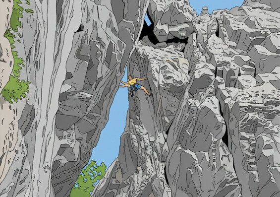

Caprices du temps
Touchez une voie pour voir ses infos, appui long pour la retrouver dans la liste.
-
17
La voie des papys
6bUn pas de bloc au début du mur (après la rampe d’accès). Belle fin physique.
P. Courtois
-
18
Chacun sa grotte
6cDalle technique qui se redresse. Pas facile de l’atteindre, cette grotte ! Sortie facile ensuite.
Jean-Yves Salin
-
19
Nouvelle vague
5aJolie balade en traversée gauche-droite!
Jean-Yves Salin
-
20
Les caprices du temps
6bUn départ bloc en dalle permet de rejoindre la voie précédente que l’on quitte à la fin de la rampe pour repartir à gauche dans mur raide. Classique ! Il fut un temps où l’on rejoignait la grotte à gauche pour retraverser à droite ensuite, à faire, pour mieux comprendre !
René Hopf
-
21
Yétizodrome
6b+Très beau petit mur avec un pas vicieux au milieu !
Éric Mutin
-
21b
Micro-Méga
?Projet ardu en moulinette depuis Yéti.
Jean-Yves Salin
-
22
Corde transit
7c+Ultra bloc, ultra beau (si on aime ce style !)
J.B.Cappicot
-
23
Milinette
7a+Départ à doigts, fin physique plus facile et très belle.
J.B.Cappicot
-
24
Banane mécanique
6aDe jolis mouvements techniques.
Éric Mutin
-
25
Partifix
7bUn bombé délicat, très à méthodes (ne pas négliger les petites prises côté gauche de la fissure).
René Hopf
-
26
A nous de…
6bMême départ que la précédente puis remonte en écharpe la fissure à droite, sympa.
Jean-Yves Salin
-
27
Kandinsky
6a+Un départ retors. Fissure sympa ensuite.
René Hopf
-
28
Contrôle technique
6bDépart physique sur bonnes prises suivi d’une dalle fine où, là aussi, les prises sont franches. Le pilier final, bien que plus facile, n’en est pas moins intéressant !
Jean-Yves Salin
-
29
La Beaune aventure
6b+/6cUn chouette cocktail, mélange de passages physiques et techniques (2017).
Jean-Yves Salin
